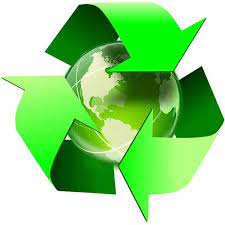
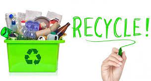
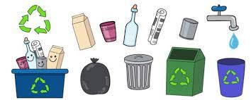
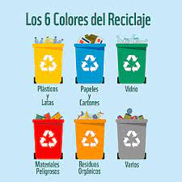
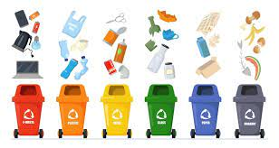

xddd
Reciclar
xd
¿Qué es reciclar?
Se entiende por reciclar la acción de convertir materiales de desecho en materia prima o en otros productos, de modo de extender su vida útil y combatir la acumulación de desechos en el mundo.
El reciclaje reinserta el material de descarte de numerosas actividades industriales, empresariales o del consumo cotidiano, en la cadena productiva, permitiendo que sea reutilizado y disminuyendo la necesidad de adquirir o elaborar materiales nuevos.
No todos los materiales existentes son reciclables, pero un buen número de ellos sí, como el cartón, el vidrio, el aluminio, el papel y ciertos tipos de plásticos, que pueden ser sometidos a diversos procesos de reaprovechamiento y recomenzar su ciclo de utilidad. En otros casos, en cambio, no puede dárseles el mismo uso, pero sí puede dárseles uno distinto en procesos de de construcción, de decoración, de obtención de energía, etc.
Así ocurre con los desechos orgánicos (restos de comida, basura líquida, etc.), que no son reciclables, pero por suerte existen procesos de biodegradación que llevan a cabo una actividad natural equivalente, pudiendo ser utilizados para composting o fabricación de abono.

xddddddd

xd
Importancia de reciclar
Reciclar es una forma de combatir la contaminación de los suelos y mares, ya que la presencia prolongada de basura en ellos acarrea cambios impredecibles en sus procesos bióticos y ecológicos. De cara a la construcción de un modelo de vida industrial sostenible en el tiempo, es decir, que no conduzca de cabeza a la enfermedad, la extinción y el cambio climático, el reciclaje se impone como una necesidad humana.

Por otro lado, reciclar ciertos elementos puede constituir una actividad medianamente lucrativa, una vez que se logre implantar como parte de la cultura cotidiana. Los elementos reciclados son comprados por las empresas que los aprovechan para disminuir su adquisición de materia prima, de modo que se trata de un panorama ganar-ganar.
xd
Tipos de reciclaje
Reciclaje del papel. Grandes cantidades de papel usado pueden ponerse en remojo para fabricar pulpa de celulosa y fabricar papel de inferior calidad, que pueda volver a utilizarse.
Reciclaje de metales. Productos metálicos cotidianos elaborados a partir de aluminio, cobre y otros metales blandos, pueden fundirse y volver a aprovecharse para elaborar nuevos productos, disminuyendo la necesidad de comprar materia prima.
Reciclaje de envases plásticos. Los tetra-bricks y otros envases plásticos enteros pueden volver a ser empleados, una vez que hayan sido higienizados correctamente y dispuestos para volver a contener alimentos o jugos.
Reciclaje de aceites. El aceite de cocinar es un potente contaminante del agua, que puede recogerse y emplearse mediante procesos de filtrado y purificación, como lubricante de maquinaria.

xddddddd
